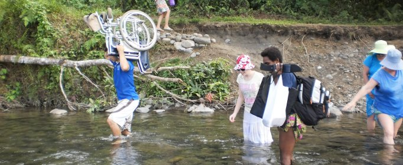
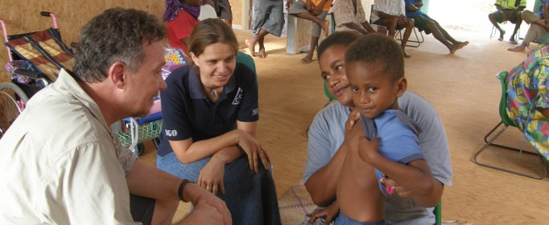
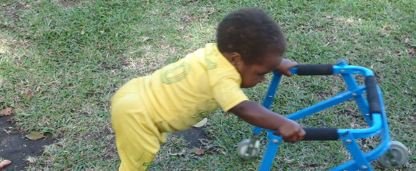

We are a Christian organisation who takes seriously Jesus' mandate to care for those who are disempowered, marginalised or forgotten.
Our Mission Statement:
- To provide health and therapy support/services to people with disabilities and health challenges in impoverished circumstances
- To facilitate workers to go and implement the primary object of the association
- To actively raise funds to promote the principle object of Joint Therapy Outreach internationally.
- To operate Joint Therapy Outreach in a manner consistent with recognised Christian principles and values.
- To pray for the people and work of Joint Therapy Outreach locally and internationally.